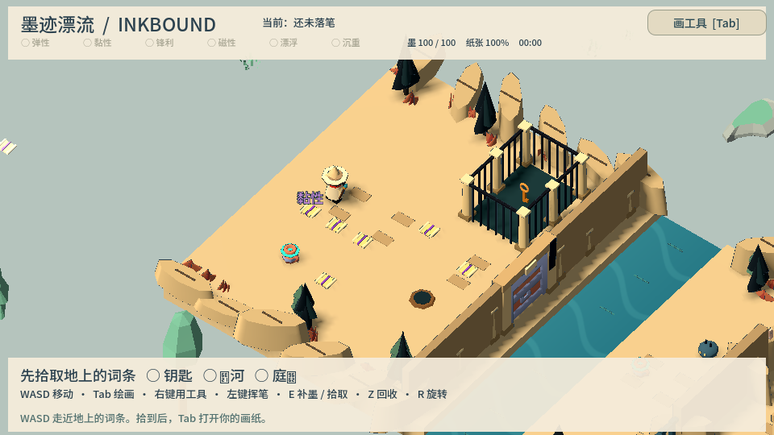

今晚两款 · 恐龙也想开灯 / 野外画家 V8
结交恐龙，建设自己的营地；拾取词条，画一条自己的路。
进入两款试玩 ↗ 直接看实机录像🧪 玩法 Demo 大厅 核心玩法逐块验证 · 点卡片直接试玩
📜 版本历史
📦
还没有任何可试玩的构建。
把 Godot 的 Web 导出结果放到 builds/<版本名>/ 目录（含 index.html 和 build.json），刷新本页即可显示。详见 README。
Miro 想法 → 自动开发 → 浏览器即点即玩 · 试玩后打个分、留句话，帮我们把游戏做得更好

结交恐龙，建设自己的营地；拾取词条，画一条自己的路。
进入两款试玩 ↗ 直接看实机录像📦
还没有任何可试玩的构建。
把 Godot 的 Web 导出结果放到 builds/<版本名>/ 目录（含 index.html 和 build.json），刷新本页即可显示。详见 README。